1-1.2點選
會跳出新增作業的視窗，選擇【員工編號】、【生效日期】、選取【調薪項目】系統會自動帶入【調整前金額】、選擇【調薪原因】，再填入【調整後金額】、【調整說明】，點選
取消退出，參考(圖D-2)。
HRMS人力資源系統
肆、薪資管理系統 (※注意，【新增】、【刪除】、【編輯】、【查詢】等功能限具有相應功能權限者可使用。)
A.調薪處理作業
1.員工調薪
1-1.新增作業
1-1.1點選左側【員工調薪作業】，下拉式選單來選擇所屬【公司】，參考(圖D-1)。
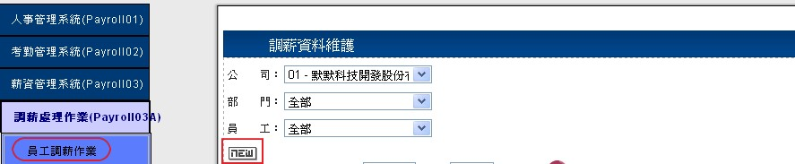(圖D-1)
1-1.2點選
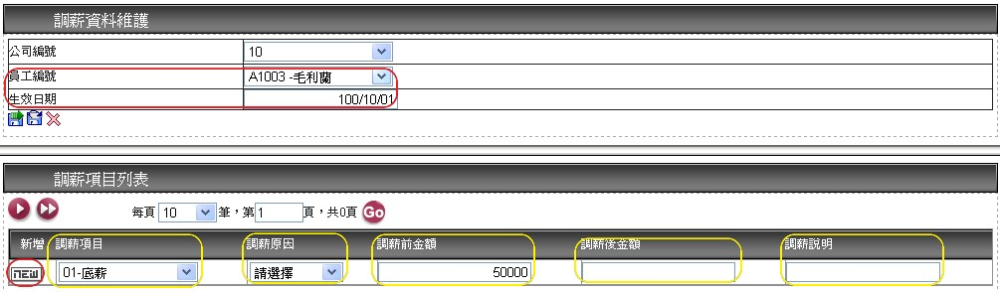 (圖D-2)
1-2.編輯與刪除作業
1-2.1欲編輯員工調薪資料，選擇【公司】、【部門】、【員工】後點選
編輯來修改【調薪項目】、【調整前金額】、選擇【調薪原因】，再填入【調整後金額】、【調整說明】，參考(圖D-3)，結束請點選
更新或
取消來退出，參考(圖D-4)。
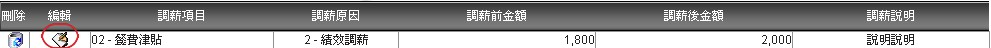(圖D-3)
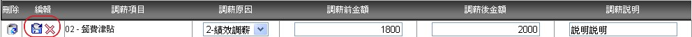(圖D-4)
1-2.2欲刪除資料，可直接點選
刪除退出，參考(圖D-5)。
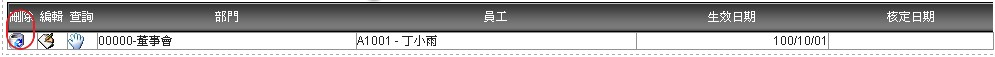(圖D-5)
1-3.查詢作業
1-3.1 本作業可依【公司】、【部門】、【員工】所顯示的下拉式選單來查詢已建檔人員歷年調薪 ，參考(圖D-6)
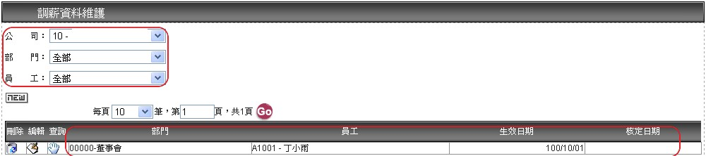(圖D-6)
2.調薪確認
2-1查詢作業
2-1.1點選左側【調薪確認作業】，下拉式選單來選擇所屬【公司】、【生效日期】再點 進行符合資料搜尋，則可列出尚未核定資料，參考(圖D-7)。
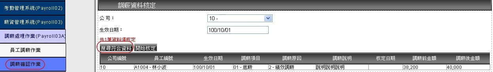(圖D-7)
2-2核定作業
2-1.1 確認核定此筆調薪資料，點即完成核定作業(圖D-8)。
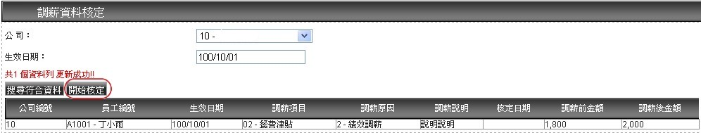(圖D-8)
B.薪資試算作業
1.薪資試算
1-1試算作業
1-1.1點選左側【薪資清冊】本作業必須選擇【公司】、【計薪年月】、【期別】所顯示的下拉式選單來選取欲試算月份薪資，並點執行薪資試算，即完成試算作業，參考(圖D-9)。
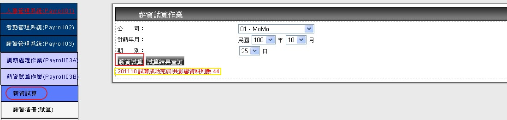(圖D-9)
1-2查詢作業
1-2.1 選擇【公司】、【計薪年月】、【期別】所顯示的下拉式選單來選取欲查詢月份資料，點選
來查詢已試算完畢薪資資料參考(圖D-10)。
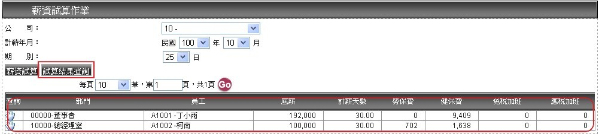(圖D-10)
1-2.2 點選可進入【薪資試算作業查詢】詳細內容視窗畫面(圖D-11)。
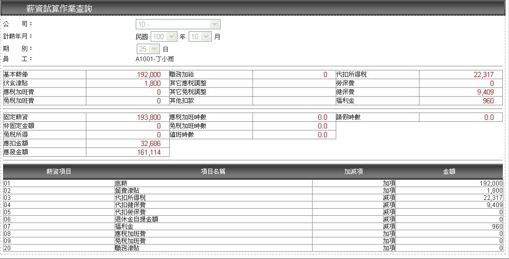(圖D-11)
2.薪資清冊(試算)
2-1. 點選左側【薪資清冊(試算)】本作業可以依照所需條件，使用下拉選單方式選擇【公司】、【計薪年月】、【期別】、【部門】、【員工編號】點選預覽列印即可產生資料。參考(圖D-12) 。
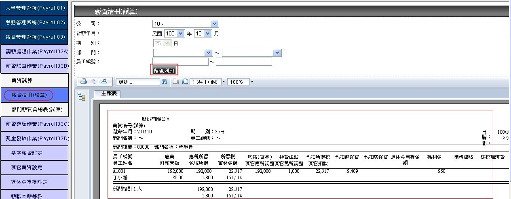(圖D-12)
3.部門薪資彙總表(試算)
3-1.點選左側【部門薪資彙總表(試算)】本作業可以依照所需條件，使用下拉選單方式選擇【公司】、
【計薪年月】、【期別】、【部門】、【員工編號】點選預覽列印即可產生資料。參考(圖D-13) 。
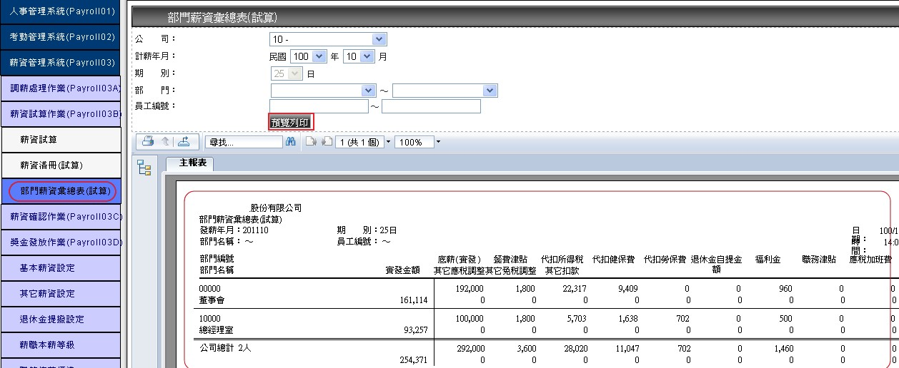(圖D-13)
C.薪資確認作業
1.薪資確認作業
1-1確認作業
1-1.1 選擇【公司】、【計薪年月】、【期別】所顯示的下拉式選單來選取欲查詢月份資料，點選 來查詢已試算完畢薪資資料，參考(圖D-14)。
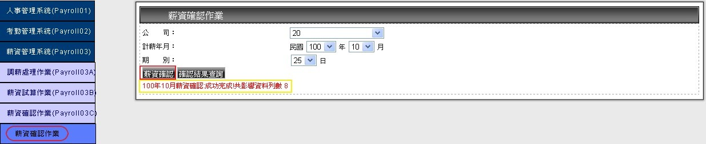(圖D-14)
1-2查詢作業
1-2.1 選擇【公司】、【計薪年月】、【期別】所顯示的下拉式選單來選取欲查詢月份資料，點選 來查詢已試算完畢薪資資料，參考(圖D-15)。
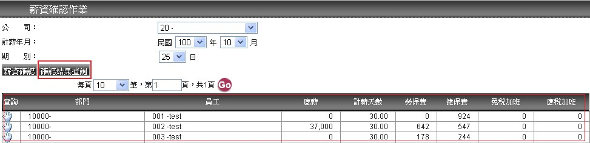(圖D-15)
1-2.2 點選可進入【薪資確認作業查詢】詳細內容視窗畫面(圖D-16)。
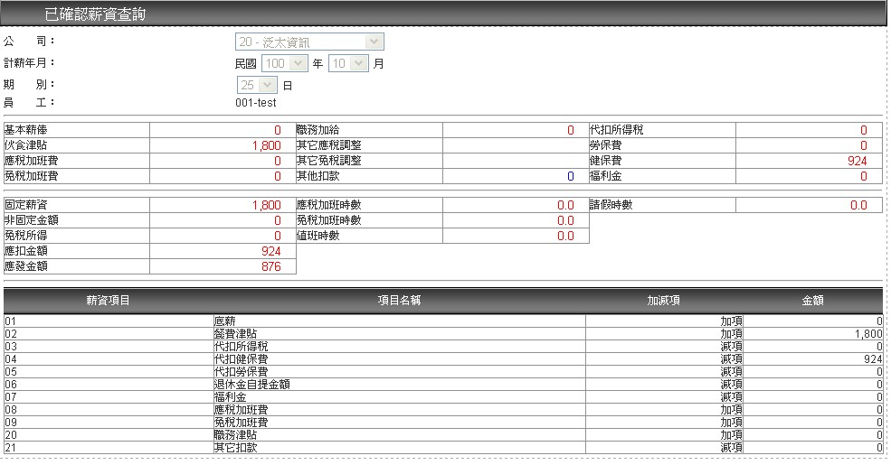(圖D-16)
2.薪資清冊(確認)
1-1.點選左側【薪資清冊(確認)】本作業可以依照所需條件，使用下拉選單方式選擇【公司】、【計薪年月】、【期別】、【部門】、【員工編號】點選預覽列印即可產生資料，參考(圖D-17)。
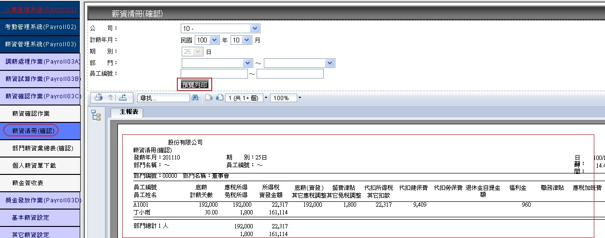(圖D-17)
3.部門薪資彙總表(確認)
點選左側【部門薪資彙總表(確認)】本作業可以依照所需條件，使用下拉選單方式選擇【公司】、
【計薪年月】、【期別】、【部門】、【員工編號】點選預覽列印即可產生資料，參考(圖D-18) 。
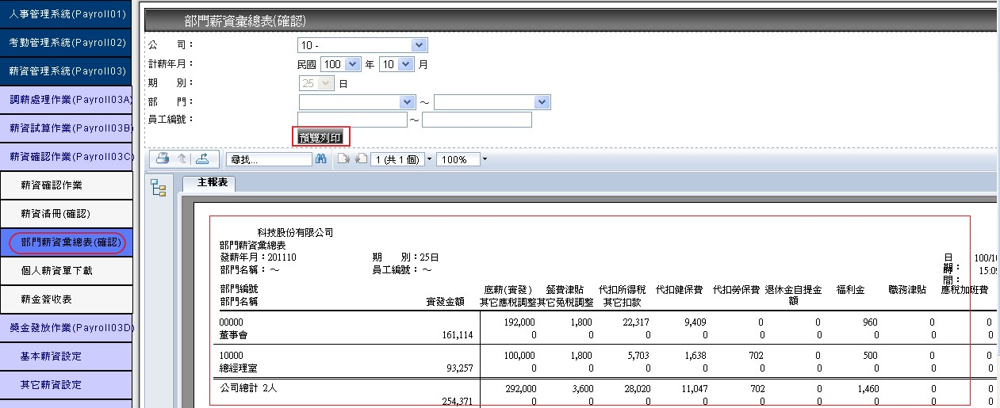(圖D-18)
4.個人薪資單下載
點選左側【個人薪資單下載】，使用下拉選單方式選擇【公司】、【部門】、【員工】等其他欄位，
點選下載檔案即可，參考(圖D-19)
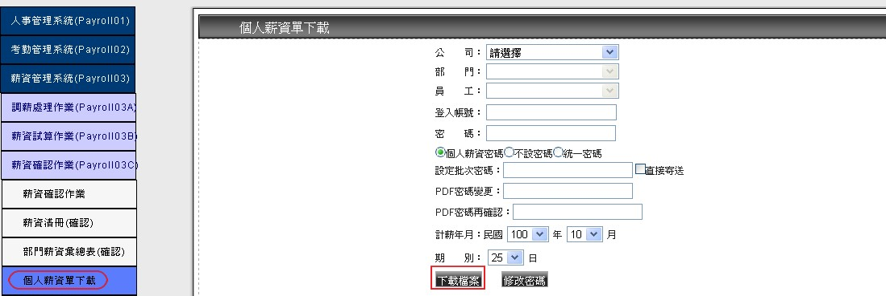(圖D-19)
5.薪金簽收表
點選左側【獎金簽收表】，使用下拉選單方式選擇【公司】、【部門】、【員工】、【記薪年月】、
【薪別】、【獎金發送】、【發送日期】，點選報表即可匯出資料，參考(圖D-20)。
(※匯出的格式有EXCEL、PDF、WORD，是使用.net的技術報表，無須額外支付費用)
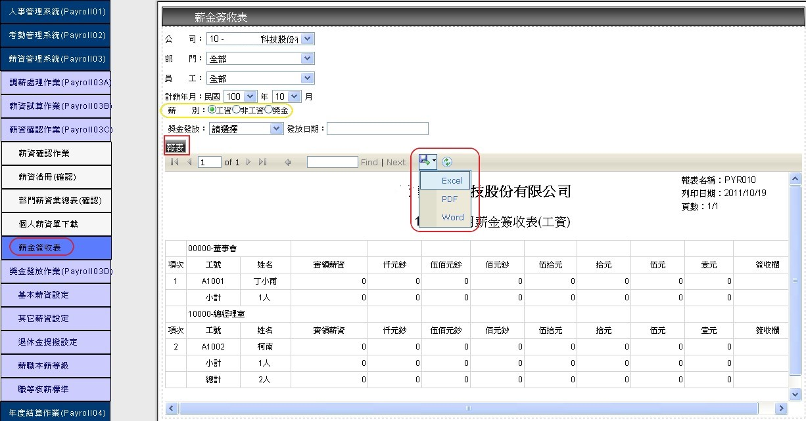(圖D-20)
D.獎金發放作業
1.獎金發放作業
1-1新增作業
1-1.1點選左側【獎金發送作業】，點選
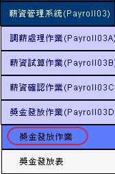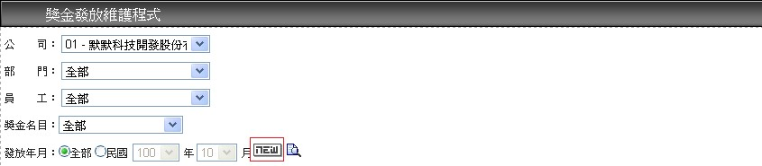(圖D-21)
1-1.2 ，將會出現新增獎金發放視窗，在此視窗中可用下拉選單方式選擇【公司】、【部門】、【員工】、【獎金名目】、【獎金金額】可選擇定額或者是比例的方式來發放， 參考
(圖D-22)。
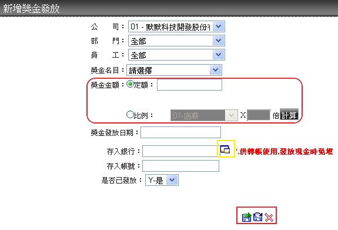 (圖D-22)
1-1.3點選選擇表，會出現銀行【選擇列表】視窗，來選擇獎金【存入銀行】，並輸入【存入帳號】，參考(圖D-23)。
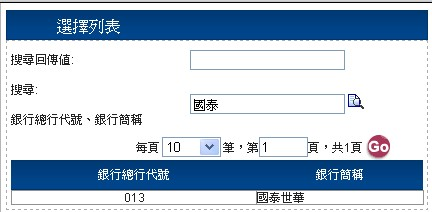(圖D-23)
1-1.4資料輸入完畢後，按
1-2編輯與刪除作業
1-2.1欲編輯單筆個人獎金發放資料，畫面中點選
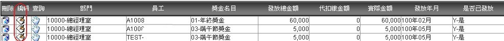(圖D-24)
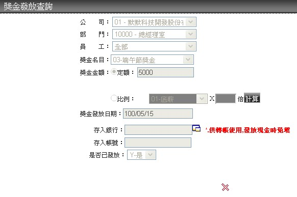(圖D-25)
1-2.3欲刪除資料，點選
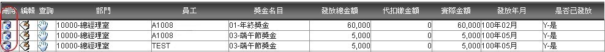(圖D-26)
1-3查詢作業
點選查詢按鈕，將出現【獎金發放查詢】視窗，參考(圖D-27)。
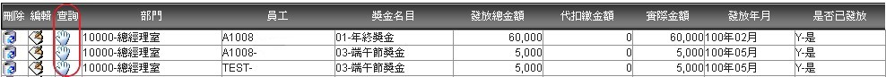圖D-27)
2.獎金發放表
點選左側【獎金發送表】，在此視窗中可用下拉選單方式選擇【公司】、【部門】、【員工】、
【獎金名目】、【發送年月】或是選擇日期後，點選查詢，即可帶出資料，參考(圖D-28)。
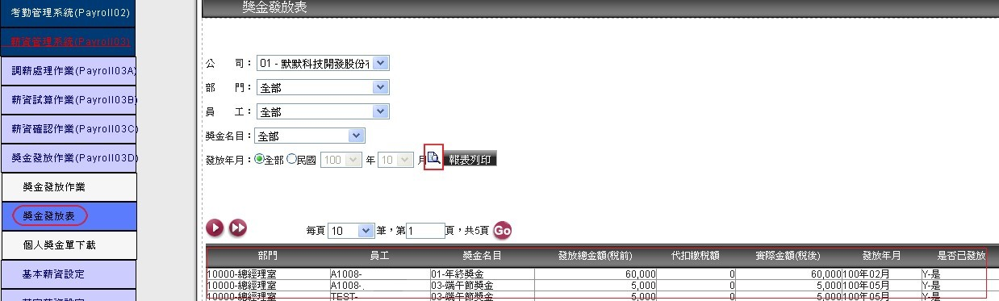(圖D-28)
3.個人獎金單下載
E.基本薪資設定
可進行人員基本薪資明細建檔維護，此部份為人員每月基本固定薪資，如有其它非固定性津貼或獎金
請至【其它薪資】維護。
1查詢作業
1.1 點選左側【基本薪資設定】，本作業可依【公司】、【部門】、【員工】所顯示的下拉式選單來查詢已建檔人員資料，參考(圖D-29)。
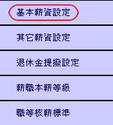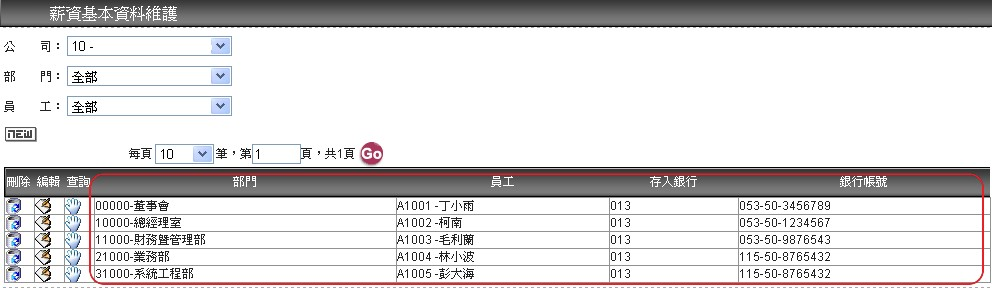(圖D-29)
2新增作業
2.1 本作業先選擇【公司】所顯示的下拉式選單來選取欲新增的公司人員資料，點選
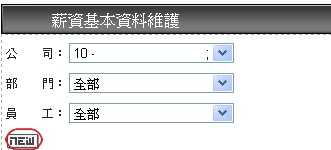(圖D-30)
2.2.本作業將會帶出新增的視窗【公司編號】、【員工編號】下拉式選單選定特定人員，手動填入【存入帳號】並來選擇【轉帳存入日期】，此功能可依公司給薪方式設定，參考(圖D-31)。
每月發一次薪：月薪制請固定選擇【上期】或【下期】輸入
每月發二次薪：【上期存入日期】、【下期存入日期】二者皆應輸入
若發薪方式為現金發放，則存入銀行與存入帳號可略過
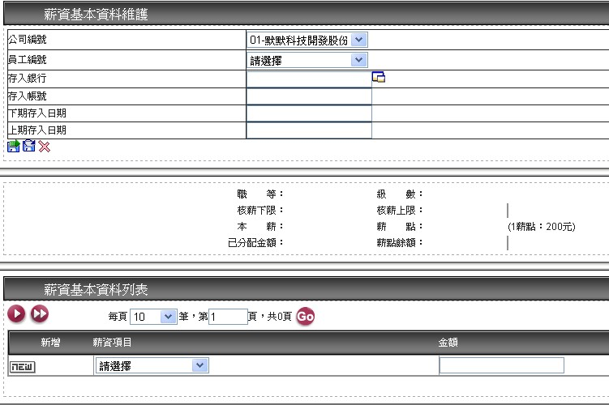(圖D-31)
2.3 選擇欲新增的員工編號後會顯示該員工職等、級數、及相關核薪限定，此部份能顯示與自動計算並提醒，無強制核定(沒依規定設定依樣可以新增或修改)，參考(圖D-32)。
(※此部份在第一次開啟員工薪資基本資料時，系統會依”薪資結構參數”中”項目別”來設定，會自動預設建立一些薪資項目，如欲修改請至基本資料作業的【職等核薪標準】、【薪職等及與本薪維護】作內容調 整)2.4 編輯完畢後點選
存檔後繼續新增下一筆或點選
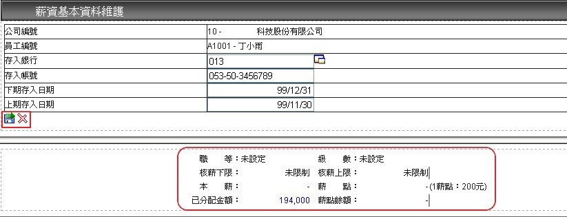(圖D-32)
2.5 依(圖A-4) 【薪資項目】下拉式選單選取欲新增【薪資項目】及填入【金額】，點選
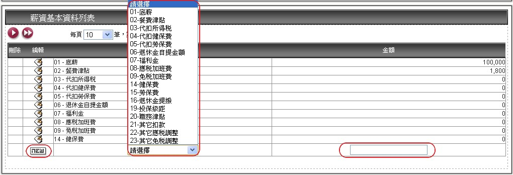(圖D-33)
3編輯與刪除作業
可選擇欲修改的【薪資項目】點選
(※注意，若薪資項目於[薪資結構參數]中將[項目別]設定為[0.系統設定]時，則不可刪除。在刪除中會沒有刪除用的按鈕，以防使用者誤刪。)
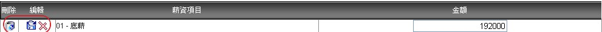(圖D-34)
4銀行代碼查詢功能
點來選擇【存入銀行】即會出現查詢畫面(圖A-8)，可利用
(※注意，僅可查詢已建檔銀行簡稱代號，請在【銀行主檔】進行資料維護，並點選【選取】結束此對話框。)
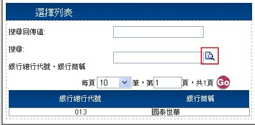(圖D-35)
F.其他薪資設定
此為特別薪資明細，指非每月固定支付之薪資，依當月實際情況額外給付的薪資，本作業可進行新增修改其它薪資項目與資料維護。
1查詢作業
點選左側【其他薪資設定】，可依【公司】、【部門】、【員工】所顯示的下拉式選單來查詢已建檔人員，參考(圖D-36)。
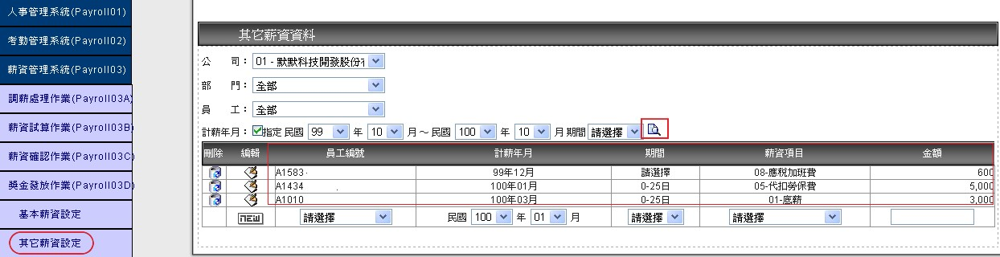(圖D-36)
2新增作業
本作業 依【員工編號】、【記薪年月】、【期間】、【薪資項目】所顯示的下拉式選單來選取資料並填入【金額】，點選
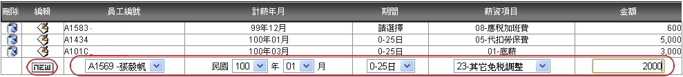(圖D-37)
3編輯與刪除作業
3.1 依(圖B-4) 可選擇欲修改的薪資項目【金額】點選
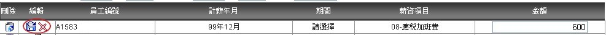(圖D-38)
3.2 欲刪除資料可直接點選
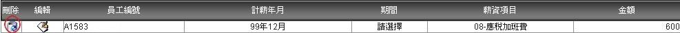(圖D-39)
G退休金提撥設定
1查詢作業
1.1 點選左側【退休金提撥設定】，可依依【公司】、【部門】、【員工】所顯示的下拉式選單來查詢已建檔資料，參考(圖D-40)。
1.2 欲查詢單筆人員資料，請點選查詢，將會出現下列【退休金資料查詢】視窗，參考(圖D-40)。
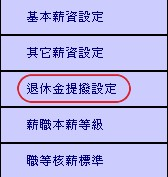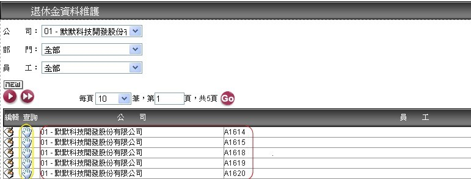(圖D-40)
2 新增作業於點選畫面上
【員工編號】、【員工自提率變更年度】與【企業提撥率變更年度】，其餘選項部分可用點選方式來操作，編輯完畢後點選
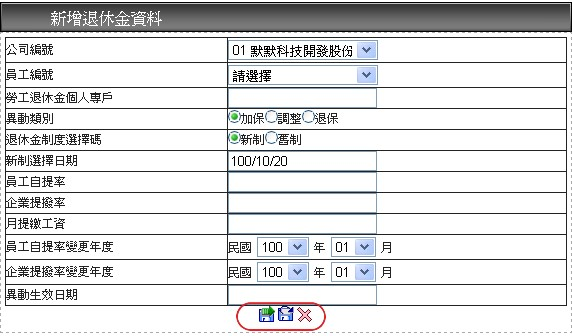(圖D-41)
3. 編輯作業
欲編輯單筆人員資料，請點選
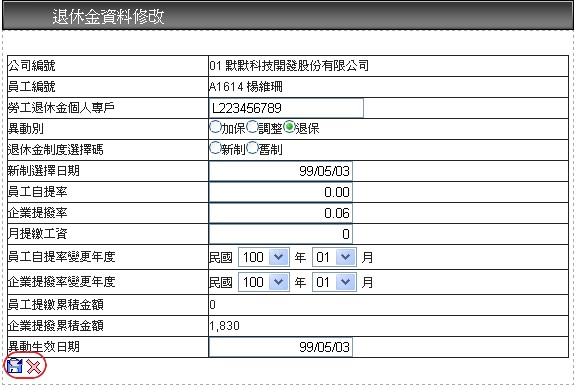(圖D-42)
H薪資本薪等級
1查詢作業
點選左側【基本薪資設定】，本作業可依【職等】、【級數】，所顯示的下拉式選單來查詢已建檔資料，參考(圖D-43)。
(※批次設定：選擇【本薪職等】並填寫【1級本薪】與【級差】後，按下【設定單一職等本薪】，可一次設定指定職等所有級數之本薪；從最低【1級本薪】起，等差設定至最高級數)
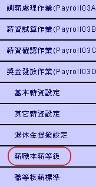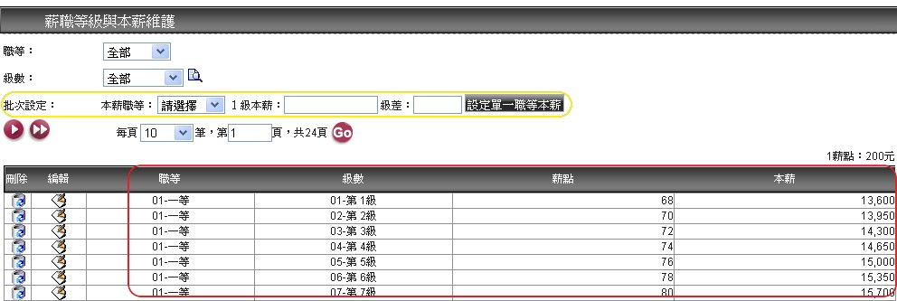
(圖D-43)
2新增作業
於點選畫面上
(※ 存入資料庫時應檢核是否已有【職等】、【級數】等2項完全相同的資料存在，有則會提示"新增失敗！資料重覆，無法新增")
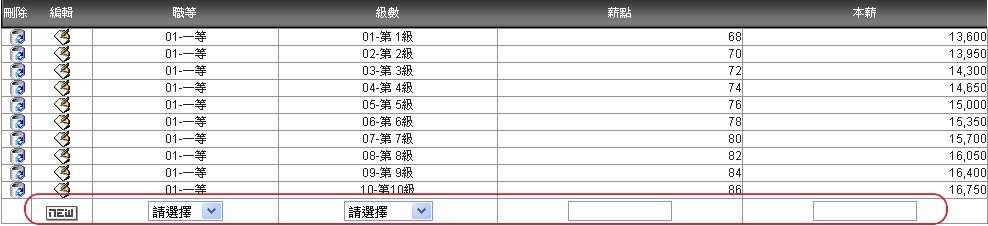(圖D-44)
3修改作業，參考(圖D-2)
選擇
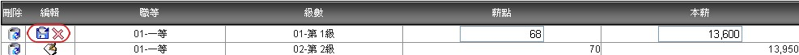(圖D-45)
I職等核薪標準
1查詢作業
點選左側【職等核薪標準】，在【職等】欄位輸入欲查詢的資料系統將會帶出建檔資料參考(圖D-46)。
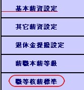
(圖D-46)
2新增作業
位於
(圖D-47)
3修改作業
選擇
(圖D-48)